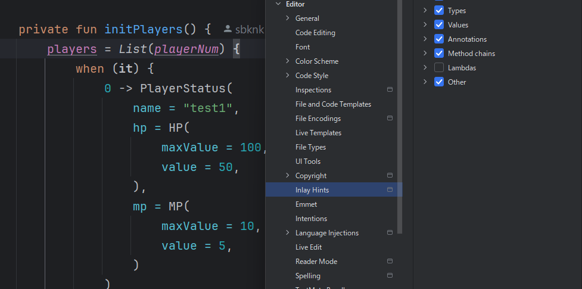
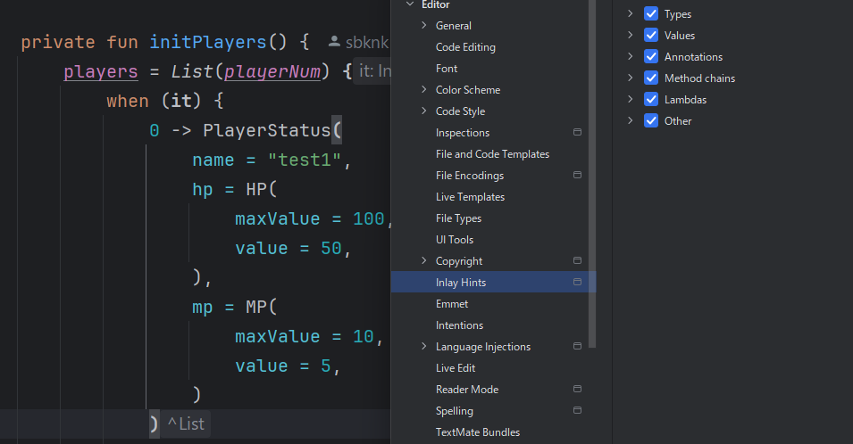

AndroidStudioをKoalaにアップデートしたらスコープのhintの表示がなくなってしまいました。
今アクセスできるitが何者なのか、はたまたitを利用できる箇所にいるのかわからなくなって困ったのでgptに質問しました。
4. インラインの型ヒントを有効にする
インラインの型ヒントを有効にすることで、コードエディタ内に変数の型を表示することができます。これを有効にするには以下の手順に従います：
Android Studioのメニューから File > Settings（Macの場合は Android Studio > Preferences）を開く。
Editor > Inlay Hints > Kotlin に移動する。
Types タブで Show type hints for をチェックし、必要な設定を有効にする。
どうやらヒントに関する設定があるようです。
そもそもヒントという名前だったのですね、知りませんでした。
lambdaのhintの設定をつけると、エディタ上で見られるようになりました。
| off | on |
|---|---|
|  |  |